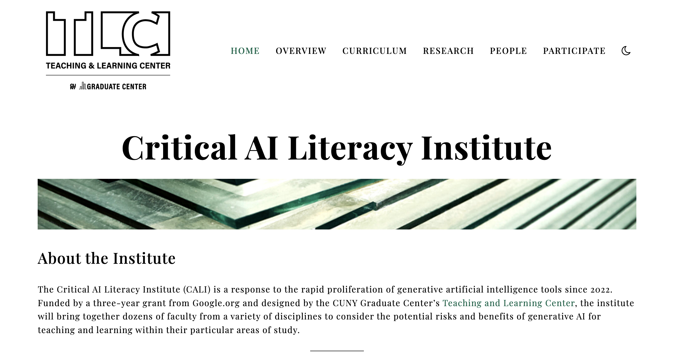
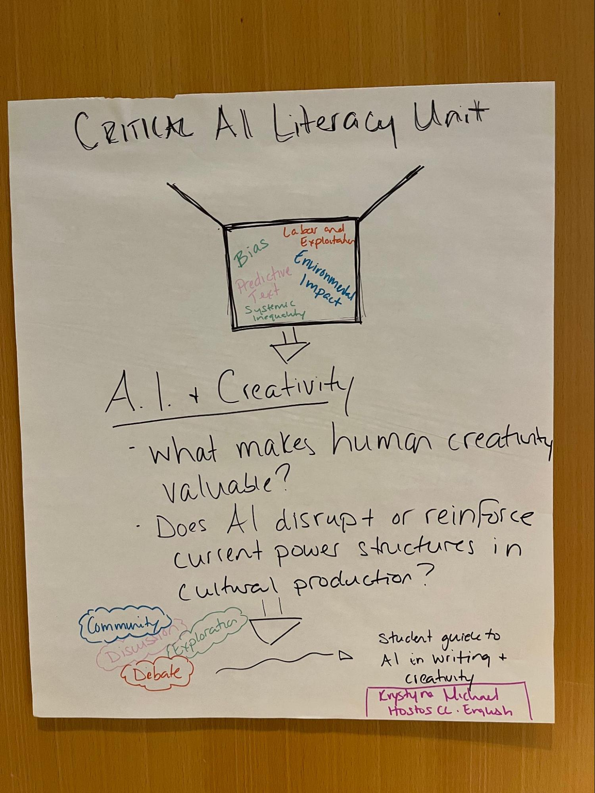
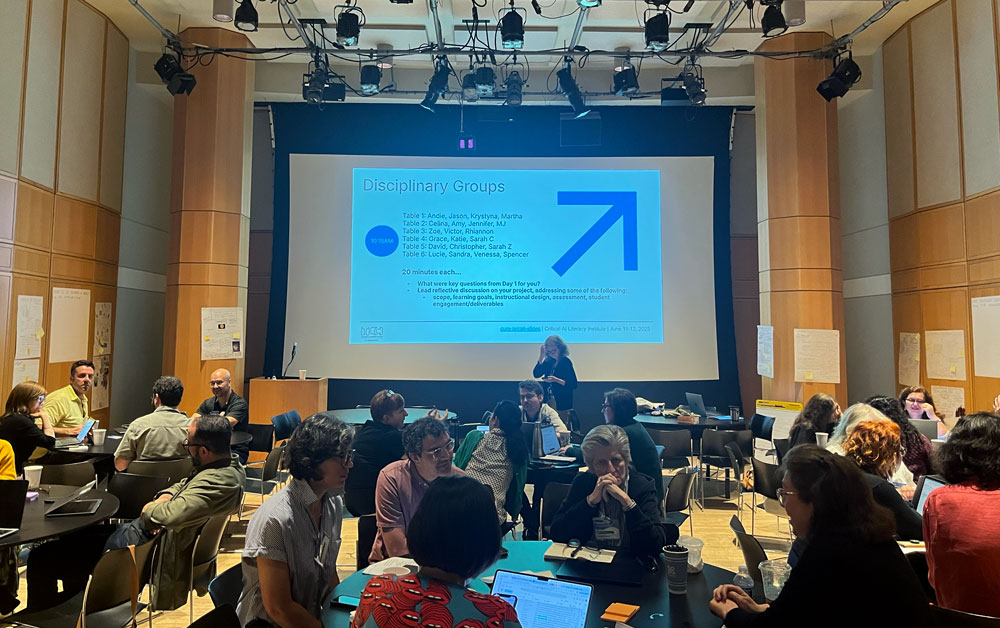

Skip to slide content
Swipe
cuny-ai-lab.github.io/cali-empire
Empire AI | April 29, 2026
Critical AI Literacy Institute (CALI)
Teaching and Learning Center, CUNY Graduate Center
Luke Waltzer, Director
Agenda
About CALI
Research Design
Future Directions
Boids
About CALI
1
Three year
project

About CALI
1
Three year
project
2
Modeling
critical engagement

About CALI
1
Three year
project
2
Modeling
critical engagement
3
Faculty Development
| Research | R&D

Cohort 1 · 2025
CUNY Campuses
22 faculty
12 campuses
College
Faculty
Brooklyn College
4
LaGuardia Community College
3
Baruch College
2
College of Staten Island
2
Lehman College
2
Queensborough Community College
2
The City College of New York
2
BMCC
1
Hostos Community College
1
Kingsborough Community College
1
Queens College
1
York College
1
Cohort 1 · 2025
Select Interventions
Sarah Cohn, LIB 1000:
readings across scale, examining outputs, models
Krystyna Michael, ENG 100:
reflective writing on labor, creativity, and AI use
Amy Traver, SOC 101:
applying core sociological concepts to AI
Sarah Zelikovitz, CSC 490:
how AI amplifies social and ethical computer science issues
Zoe Griffith, HIS 1003:
how do LLMs know what they 'know'?
David Schwittek, ART 202:
design and the ethics of emerging systmes
Christopher Stein, MMC 100:
comparing image-making workflows: critical application of genAI in compositing workflows
Andie Silva, ENG 328:
AI before AI, technology and change
Grace Pai, EECE 220:
integrating AI into elementary pre-service teacher preparation
Martha Nadell, ENG 4113:
reading the text and lifting the hood: critical AI literacy & experimentation
Sandra Kingan, CALC 1:
using LLMs in the mathematics classroom: becoming “bilingual” in math and AI
Jason Hendrickson, ENG 101:
AI and career-connected learning
Victor Sierra Matute, SPA 4010:
AmigAI, Spanish conversational chatbot
Research Design
Mixed Methods
Faculty Development Data & Program Evaluation
— tracking engagement, module development, and outcomes across the cohort
Critical AI Literacy Modules & Teaching Implementation
— documenting how faculty translate CALI frameworks into course practice
Undergraduate Student Surveys & Interviews
“Describe a recent situation where you had to decide whether or not to use AI.”
“How do AI tools affect your learning process when you use them for school?”
Research
Student Surveys
Over 400 responses, 2 interviews
AI tool usage frequency — ~44% never or rarely
Environmental awareness — 364 responses
Cohort 2 · 2026
Second CALI Cohort
Launched March 27, 2026
1
Critical Foundations
2
Ecological Implications
3
T(h)inkering
Cohort 2 · 2026
CUNY Campuses
22 faculty
12 CUNY campuses
College
Faculty
Hunter College
5
The City College of New York
5
BMCC
2
York College
2
Baruch College
1
Bronx Community College
1
College of Staten Island
1
John Jay College of Criminal Justice
1
Lehman College
1
New York City College of Technology
1
Queens College
1
Queensborough Community College
1
Research
Teaching Critical AI Literacy...
Frame AI as sociotechnical system; cultural, labor-driven, non-neutral tech
Allow for refusal and/or adoption of GenAI tools
Pedagogy leverages community and collaboration to engage in critical inquiry
Explore how knowledge is produced, for whom, and with what consequences
...As collective world-building
Resist inevitability narratives
Think across scale and contexts
Interrogate systems of power, knowledge
Center social, environmental, epistemic justice issues
Classroom as “radical space of possibility” for agency and collective action
Zach Muhlbauer
CALI T(h)inkering
T(h)inkering
Technical Lead
Infrastructure and instructional design
1
Identifying
pedagogical challenges
faculty face in their classes
2
Translating domain-specific methods into
technical control over AI tools
3
Prototyping
domain-specific AI tools
for classroom application
4
Pilots:
Spanish
(Hunter, Baruch) ·
English, History, First-Year Writing
(CCNY)
T(h)inkering
Year 1 Infrastructure
In Search of Shared Access
June 2025
— Hugging Face Chat (since sunsetted)
Summer 2025
— Hugging Face Spaces for hosting AI demos
ChatUI-Helper
— turning faculty configs into
web-hosted applications
ChatUI Helper — templates, identity, and system config
Example prompts, URL grounding, and deployment
T(h)inkering
Piloting on Hugging Face
Spanish at Hunter College, Fall 2025
AmigAI
— conversational Spanish practice
Non-native and heritage speaking
Spanish classes, Hunter College
Built-in changelog
for retraceable system prompt edits
AmigAI Demo on Hugging Face Spaces
Built-in changelog for retraceable best practices
T(h)inkering
Then
and Now
CALI Cohort 1, 2025
Faculty pilots as standalone Hugging Face Spaces
Each demo configured and deployed individually with direct support
Hard to track, evaluate, or manage at scale
CALI tools collection on Hugging Face
T(h)inkering
Then and
Now
CALI Cohort 2, 2026
Open WebUI
— open-source chat platform, self-hosted by
CUNY AI Lab
Dedicated sandbox
environment for teaching and learning
Supports customization of
model cards
, comparison of
multiple models
at once
CUNY AI Lab Sandbox
Open WebUI model selector in CUNY AI Lab sandbox
AmigAI conversational practice in Open WebUI
AmigAI-Template vs Google Gemma comparison
T(h)inkering
T(h)inkering to Come
Five Projects for Cohort 2
Concept Mapping
(Interdisciplinary)
Laboratory Workflows
(Physics)
Deep Listening
(Ethnomusicology)
Interdisciplinary Math Connections
(Precalculus)
Research Writing Scaffold
(Sociology)
Model card: 1) name card, 2) choose base model, 3) write system prompt
T(h)inkering
Lessons Learned By Doing
1
Tinkering
as critical and methodological knowing
2
Start small, leverage
A/B testing
to name what matters
3
Process as
scaffolded progression
and
quality assurance
4
Accrued gains of
open practices
and
community infrastructure
Looking Ahead
Policy and Strategy
Informing decision making across four domains
1
Policy Advocacy
— how do we preserve and protect the agency of teachers and students?
2
Instructional
— how do we help faculty attend to impacts of genAI on student capacity to grow in their disciplines?
3
Labor
— how do we attend to the labor impacts of genAI for teachers, students, and staff?
4
Institutional Strategy
— how do we help constituencies develop coherent, values-driven frameworks to reckon with genAI?
Discussion
Questions
How might CALI’s frameworks, tools, and methods translate to your context?
Critical AI Literacy Institute
cuny.is/cali
CUNY AI Lab
ailab.gc.cuny.edu